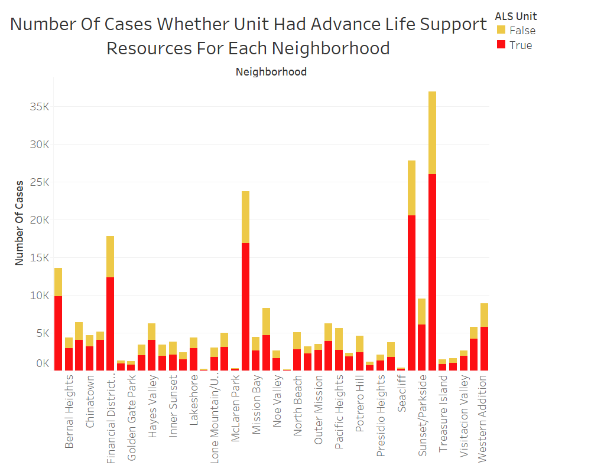

Prototype 1
Artist: Justine Huynh
This prototype supports the theme of quality of the SF Fire Department responses. Even if none of the patients require Advance Life Support (ALS), ambulances that carry ALS resources show great safety precaution in the event where future patients do need ALS. Such a safety precaution greatly increases overall quality of care.
Wrangling and Processesing Data
We filtered the data from DataSF to grab only the calls that occured in 2019.
and in San Francisco.
Then, we used Python to continue wrangling data by extracting only the columns
we need: Call Type, Call Date, Received DtTm, Dispatch DtTm, Response DtTm, On Scene DtTm, Station Area,
ALS Unit, Call Type Group, Unit Type, Location, Neighborhooods - Analysis Boundaries.
Python wrangling code can be found here: SFFireCallsWrangling.py
Our new, selected dataset is here: FireDepartmentCallsSelected.csv
Planned Interactivity
When the mouse hovers over the bar, users can see a nice table of 3 values: Neighborhood, whether the cases had ALS resources, and the number of cases.
Feedback
Many people argued that having an ALS unit does not mean a better quality service. In the final visualization, I defended why having an ALS unit on dispatch units increased quality of calls.